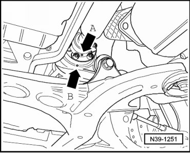
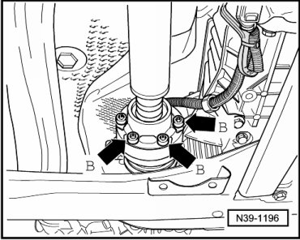
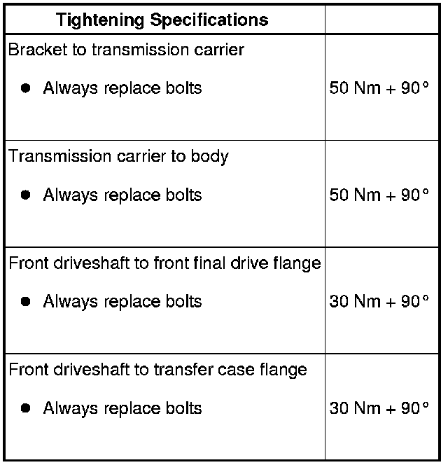

Removal and Installation
Front Driveshaft
Special tools, testers and auxiliary items required
• Torque wrench (VAG 1331)
• Torque wrench (VAG 1332)
• Engine and transmission jack (VAG 1383 A) with universal transmission adapter (1359/2)
• Brake pedal loading device (VAG 1869/2)
A twin post hoist should be used when working on the front driveshaft.
Before removing, mark the positions of all parts in relation to each other. Reinstall in the same position otherwise imbalance will be excessive, the bearings could be damaged causing rumbling noises.
If droning noises occur when driving, unbolt front driveshaft from flange at front final drive, rotate one hole relative to flange and bolt on again.
If droning noises are still audible, the front driveshaft can be rotated one hole relative to flange a total of 5 times.
Removing
- Select lever position "N" with the selector lever.
- Insert brake pedal depressor (VAG 1869/2).
- Raise vehicle.
- If an underbody impact guard is located beneath the driveshaft, remove it.
- Check whether there is a marking (colored marking) on the front driveshaft and at the front final drive flange.

- If this marking is not present, then mark in color the position of the driveshaft flange - arrow A - to front final drive - arrow B -.
- Remove the lower three bolts from front driveshaft at front final drive - arrows A -.

- Remove the lower three bolts from front driveshaft at output flange of transfer case - arrows B -.

- Lower vehicle.
- Remove brake pedal depressor (VAG 1869/2).
- Raise vehicle.
- Rotate both front wheels in the same direction at the same time so that the front driveshaft rotates 1/2 turn (180 degrees).
- Lower vehicle.
- Insert brake pedal depressor (VAG 1869/2).
- Raise vehicle.
- Remove the remaining three bolts from front driveshaft at front final drive and at transfer case.
Remove transmission carrier as follows:

- Place engine and transmission jack (VAG 1383 A) with universal adapter (1359/2) and a block of wood - A - under transfer case.
Do not loosen bolts - arrows - yet.
- Remove transmission carrier bolts - arrows - from structure.

- Now, remove transmission carrier bolts - arrows - from transfer case bracket.
- Remove front driveshaft.
If the front driveshaft cannot be removed, lower the engine/transmission assembly slightly. When doing this, the engine must not come to rest against the bulkhead.
Installing
Install in reverse sequence; note the following points:
Always replace the bolts for the front driveshaft.
- Markings - arrow A - and - arrow B - must line up as much as possible.
Install transmission carrier as follows:
- Use new bolts.
- First tighten the transmission carrier to the transfer case bracket bolts - arrows - to specifications.
- Then, tighten the transmission carrier to body bolts - arrows - to specifications.
- Install bolts for front driveshaft and tighten to specifications.
- If an underbody impact guard is located beneath the driveshaft, install it.
